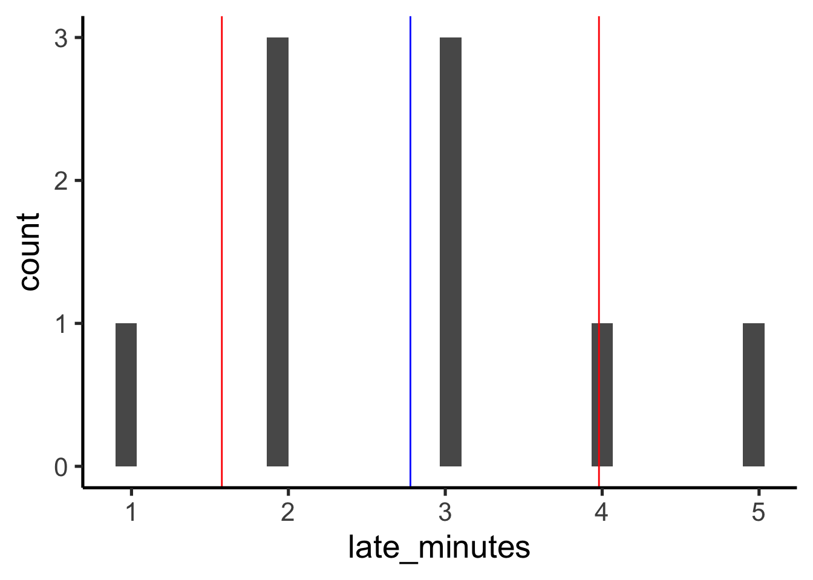
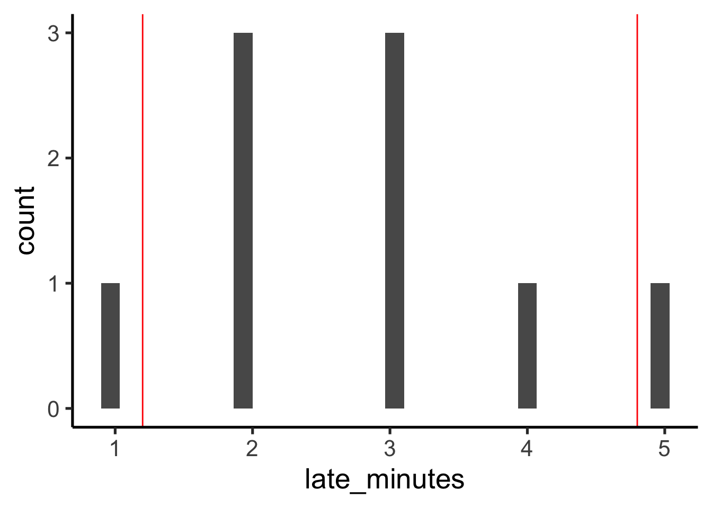
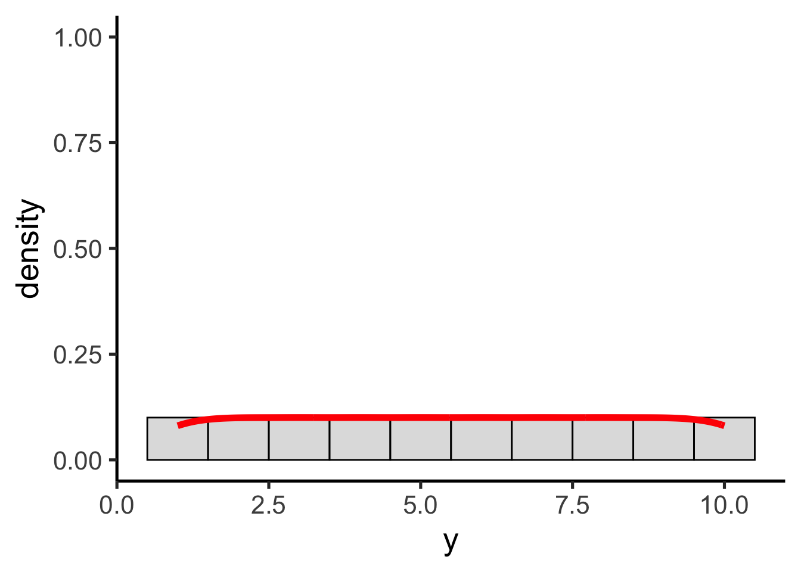
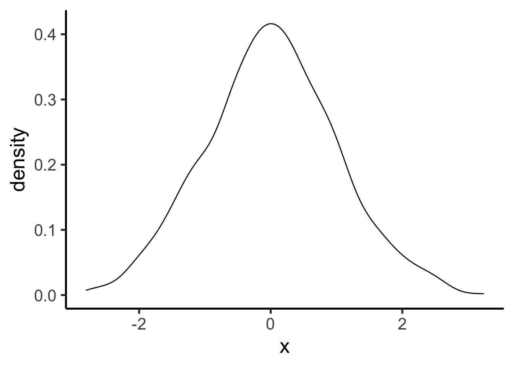
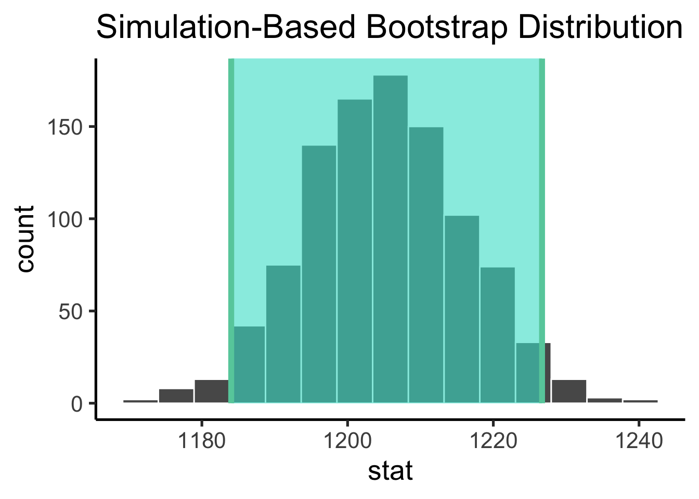
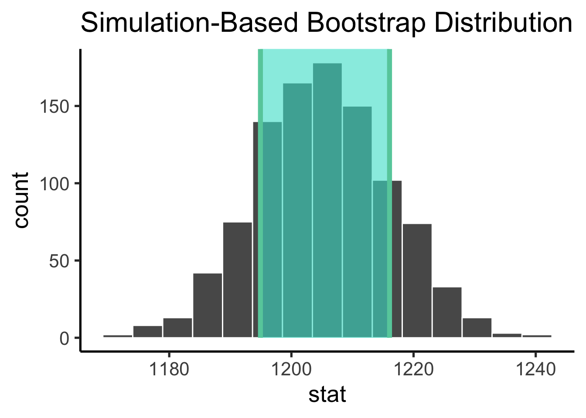

── Attaching core tidyverse packages ──────────────────────── tidyverse 2.0.0 ──
✔ dplyr 1.1.4 ✔ readr 2.1.5
✔ forcats 1.0.0 ✔ stringr 1.5.1
✔ ggplot2 3.5.1 ✔ tibble 3.2.1
✔ lubridate 1.9.3 ✔ tidyr 1.3.1
✔ purrr 1.0.2
── Conflicts ────────────────────────────────────────── tidyverse_conflicts() ──
✖ dplyr::filter() masks stats::filter()
✖ dplyr::lag() masks stats::lag()
ℹ Use the conflicted package (<http://conflicted.r-lib.org/>) to force all conflicts to become errorsSampling Distribution Demo
Data Science for Studying Language and the Mind
0.1 Announcements
- My office hours now 11:30-12:30 on Fridays in 314C
- Same day, same location; just slightly different time
- Pset 1 grading was holistic
- But this was confusing for a lot of people
- Going forward, we will attach teeny tiny point deductions so grading is more transparent
0.2 You are here
0.2.0.0.1 Data science with R
- R basics
- Data visualization
- Data wrangling
0.2.0.0.2 Stats & Model building
Sampling distribution- Hypothesis testing
- Model specification
- Model fitting
- Model accuracy
- Model reliability
0.2.0.0.3 More advanced
- Classification
- Inference for regression
- Mixed-effect models
1 Attribution
Inspired by a MATLAB course Katie took by Kendrick Kay
2 Plan for today
Tuesday’s lecture was conceptual. Today we will demo those concepts to try to understand them better.
3 Descriptive statistics
Let’s first try to understand descriptive statistics a bit better by using a toy dataset.
3.1 Creating a ‘toy’ dataset
Suppose we create a tibble that measures a single quantity: how many minutes your instructor was late to class for 10 days.
(data <- tibble(
late_minutes = c(1, 2, 2, 3, 4, 2, 5, 3, 3)
))# A tibble: 9 × 1
late_minutes
<dbl>
1 1
2 2
3 2
4 3
5 4
6 2
7 5
8 3
9 3. . .
We can sort the values with arrange to get a quick sense of the data
data %>%
arrange(late_minutes) # A tibble: 9 × 1
late_minutes
<dbl>
1 1
2 2
3 2
4 2
5 3
6 3
7 3
8 4
9 53.2 Summarize with descriptive statistics
Recall tha twe can summarize (or describe) a set of data with descriptive statistics (aka summary statistics). There are three we typically use:
| Measure | Stats | Describes |
|---|---|---|
| Central tendency | mean, median, mode | a central or typical value |
| Variability | variance, standard deviation, range, IQR | dispersion or spread of values |
| Frequency distribution | count | how frequently different values occur |
3.3 Frequency distribution
We can create a visual summary of our dataset with a histogram, which plots the frequency distribution of the data.
data %>%
ggplot(aes(x = late_minutes)) +
geom_histogram() `stat_bin()` using `bins = 30`. Pick better value with `binwidth`.
. . .
We can also get a count with group_by() and tally()
data %>%
group_by(late_minutes) %>%
tally() # A tibble: 5 × 2
late_minutes n
<dbl> <int>
1 1 1
2 2 3
3 3 3
4 4 1
5 5 13.4 Central tendency
Measure of central tendency describe where a central or typical value might fall
data %>%
ggplot(aes(x = late_minutes)) +
geom_histogram() `stat_bin()` using `bins = 30`. Pick better value with `binwidth`.
. . .
We can get these with group_by() and summarise()
data %>%
summarise(
n = n(),
mean = mean(late_minutes),
median = median(late_minutes)
)# A tibble: 1 × 3
n mean median
<int> <dbl> <dbl>
1 9 2.78 33.5 Variability
Measures of variability which describe the dispersion or spread of values
data %>%
ggplot(aes(x = late_minutes)) +
geom_histogram() `stat_bin()` using `bins = 30`. Pick better value with `binwidth`.
. . .
We can also get these with group_by() and summarise()
data %>%
summarise(
n = n(),
sd = sd(late_minutes),
min = min(late_minutes),
max = max(late_minutes),
lower = quantile(late_minutes, 0.25),
upper = quantile(late_minutes, 0.75)
)# A tibble: 1 × 6
n sd min max lower upper
<int> <dbl> <dbl> <dbl> <dbl> <dbl>
1 9 1.20 1 5 2 33.6 Parametric descriptive statistics
Some statistics are considered parametric because they make assumptions about the distribution of the data (we can compute them theoretically from parameters)
3.7 Mean
The mean is one example of a parametric descriptive statistic, where \(x_{i}\) is the \(i\)-th data point and \(n\) is the total number of data points
\(mean(x) = \bar{x} = \frac{\sum_{i=i}^{n} x_{i}}{n}\)
. . .
mean(data$late_minutes)[1] 2.777778. . .
We can compute this equation by hand to see that the results are the same.
sum(data$late_minutes)/length(data$late_minutes)[1] 2.7777783.8 Standard deviation
Standard deviation is another paramteric descriptive statistic where \(x_{i}\) is the \(i\)-th data point, \(n\) is the total number of data points, and \(\bar{x}\) is the mean.
. . .
\(sd(x) = \sqrt{\frac{\sum_{i=1}^n (x_i - \bar{x})^2}{n-1}}\)
sd(data$late_minutes)[1] 1.20185. . .
We can compute this by hand as well, to see how it happens under the hood of sd()
mean_late <- mean(data$late_minutes)
(sd_by_hand <- data %>%
mutate(dev = late_minutes - mean_late) %>%
mutate(sq_dev = dev^2))# A tibble: 9 × 3
late_minutes dev sq_dev
<dbl> <dbl> <dbl>
1 1 -1.78 3.16
2 2 -0.778 0.605
3 2 -0.778 0.605
4 3 0.222 0.0494
5 4 1.22 1.49
6 2 -0.778 0.605
7 5 2.22 4.94
8 3 0.222 0.0494
9 3 0.222 0.0494. . .
sd_by_hand %>%
summarise(
n = n(),
n_minus_1 = n-1,
sum_sq_dev = sum(sq_dev),
by_hand_sd = sqrt(sum_sq_dev/n_minus_1))# A tibble: 1 × 4
n n_minus_1 sum_sq_dev by_hand_sd
<int> <dbl> <dbl> <dbl>
1 9 8 11.6 1.203.9 Visualize the mean and sd
How do we visualize the mean and sd on our histogram?
. . .
First get the summary statistics with summarise()
(sum_stats <- data %>%
summarise(
n = n(),
mean = mean(late_minutes),
sd = sd(late_minutes),
lower_sd = mean - sd,
upper_sd = mean + sd
))# A tibble: 1 × 5
n mean sd lower_sd upper_sd
<int> <dbl> <dbl> <dbl> <dbl>
1 9 2.78 1.20 1.58 3.98. . .
Then use those values to plot with geom_vline().
data %>%
ggplot(aes(x = late_minutes)) +
geom_histogram() +
geom_vline(
xintercept = sum_stats$mean,
color = "blue"
) +
geom_vline(
xintercept = sum_stats$lower_sd,
color = "red"
) +
geom_vline(
xintercept = sum_stats$upper_sd,
color = "red"
)`stat_bin()` using `bins = 30`. Pick better value with `binwidth`.
3.10 Nonparametric descriptive statistics
Other statistics are considered nonparametric, because thy make minimal assumptions about the distribution of the data (we can compute them theoretically from parameters)
3.11 Median
The mean is the value below which 50% of the data fall.
. . .
median(data$late_minutes) [1] 3. . .
We can check whether this is accurate by sorting our data
data %>%
arrange(late_minutes) # A tibble: 9 × 1
late_minutes
<dbl>
1 1
2 2
3 2
4 2
5 3
6 3
7 3
8 4
9 53.12 Inter-quartile range (IQR)
The difference between the 25th and 75th percentiles. We can compute these values with the quantile() function.
data %>%
summarise(
iqr_lower = quantile(late_minutes, 0.25),
iqr_upper = quantile(late_minutes, 0.75)
)# A tibble: 1 × 2
iqr_lower iqr_upper
<dbl> <dbl>
1 2 3. . .
Again, we can check whether this is accurate by sorting our data
data %>%
arrange(late_minutes) # A tibble: 9 × 1
late_minutes
<dbl>
1 1
2 2
3 2
4 2
5 3
6 3
7 3
8 4
9 53.13 Coverage intervals
The IQR is also called the 50% coverage interval (because 50% of the data fall in this range). We can calculate any artibrary coverage interval with quantile()
. . .
data %>%
summarise(
iqr_lower = quantile(late_minutes, 0.025),
iqr_upper = quantile(late_minutes, 0.975)
)# A tibble: 1 × 2
iqr_lower iqr_upper
<dbl> <dbl>
1 1.2 4.8. . .
Again, we can check whether this is accurate by sorting our data
data %>%
arrange(late_minutes) # A tibble: 9 × 1
late_minutes
<dbl>
1 1
2 2
3 2
4 2
5 3
6 3
7 3
8 4
9 53.14 Visualize the median and coverage intervals
We can visualize these statistics on our histograms in the same way we did mean and sd:
. . .
First get the summary statistics with summarise()
(sum_stats <- data %>%
summarise(
n = n(),
median = median(late_minutes),
ci_lower = quantile(late_minutes, 0.025),
ci_upper = quantile(late_minutes, 0.975)
))# A tibble: 1 × 4
n median ci_lower ci_upper
<int> <dbl> <dbl> <dbl>
1 9 3 1.2 4.8. . .
Then use those values to plot with geom_vline().
data %>%
ggplot(aes(x = late_minutes)) +
geom_histogram() +
geom_vline(
xintercept = sum_stats$mean,
color = "blue"
) +
geom_vline(
xintercept = sum_stats$ci_lower,
color = "red"
) +
geom_vline(
xintercept = sum_stats$ci_upper,
color = "red"
)Warning: Unknown or uninitialised column: `mean`.`stat_bin()` using `bins = 30`. Pick better value with `binwidth`.
4 Probability distributions
A probability distribution is a mathematical function of one (or more) variables that describes the likelihood of observing any specific set of values for the variables.
4.1 R’s functions for parametric probability distributions
| function | params | returns |
|---|---|---|
d*() |
depends on * | height of the probability density function at the given values |
p*() |
depends on * | cumulative density function (probability that a random number from the distribution will be less than the given values) |
q*() |
depends on * | value whose cumulative distribution matches the probaiblity (inverse of p) |
r*() |
depends on * | returns n random numbers generated from the distribution |
4.2 Uniform distribution
The uniform distribution is the simplest probability distribution, where all values are equally likely. The probability density function for the uniform distribution is given by this equation (with two parameters: min and max).
\(p(x) = \frac{1}{max-min}\)
Warning: Using `size` aesthetic for lines was deprecated in ggplot2 3.4.0.
ℹ Please use `linewidth` instead.
4.3 R’s functions for Gaussian distribution
We just use norm (normal) to stand in for the *
| function | params | returns |
|---|---|---|
dnorm() |
x, mean, sd | height of the probability density function at the given values |
pnorm() |
q, mean, sd | cumulative density function (probability that a random number from the distribution will be less than the given values) |
qnorm() |
p, mean, sd | value whose cumulative distribution matches the probaiblity (inverse of p) |
rnorm() |
n, mean, sd | returns n random numbers generated from the distribution |
4.4 rnorm() to sample from the distribution
rnorm(n, mean, sd): returns n random numbers generated from the distribution
(normy <- tibble(
x = rnorm(1000, mean = 0, sd = 1)
))# A tibble: 1,000 × 1
x
<dbl>
1 -0.560
2 -0.230
3 1.56
4 0.0705
5 0.129
6 1.72
7 0.461
8 -1.27
9 -0.687
10 -0.446
# ℹ 990 more rows4.5 dnorm(x, mean, sd)
Returns the height of the probability density function at the given values
ggplot(normy, aes(x = x )) +
geom_density()
. . .
dnorm(2, mean = 0, sd = 1)[1] 0.053990974.6 pnorm(q, mean, sd)
Returns the cumulative density function (probability that a random number from the distribution will be less than the given values)
ggplot(normy, aes(x = x )) +
geom_density()
. . .
pnorm(3, mean = 0, sd = 1)[1] 0.9986501pnorm(-2, mean = 0, sd = 1)[1] 0.022750134.7 qnorm(p, mean, sd)
Returns the value whose cumulative distribution matches the probability
ggplot(normy, aes(x = x )) +
geom_density()
. . .
qnorm(0.99, mean = 0, sd = 1)[1] 2.326348qnorm(0.02, mean = 0, sd = 1)[1] -2.0537494.8 Using other distributions
Change the function’s suffix (the * in r*()) to another distribution and pass the parameters that define that distribution.
. . .
runif(n, min, max): returns n random numbers generated from the distribution
(uni<- tibble(
x = runif(1000, min= 0, max = 1)
))# A tibble: 1,000 × 1
x
<dbl>
1 0.160
2 0.145
3 0.149
4 0.514
5 0.493
6 0.616
7 0.447
8 0.0557
9 0.00540
10 0.222
# ℹ 990 more rows. . .
But remember, this only works for paramteric probability distributions (those defined by particular paramters)
5 Sampling distribution and bootstrapping
Let’s do a walk through from start to finish
5.1 The parameter
Generate data for the brain volume of the 28201 grad and undergrad students at UPenn and compute the parameter of interest (mean brain volume)
(population <- tibble(
subject_id = 1:28201,
volume = rnorm(28201, mean = 1200, sd = 100)
))# A tibble: 28,201 × 2
subject_id volume
<int> <dbl>
1 1 1118.
2 2 1169.
3 3 1110.
4 4 1263.
5 5 1312.
6 6 1413.
7 7 1237.
8 8 1113.
9 9 1302.
10 10 1290.
# ℹ 28,191 more rows5.2 The parameter estimate
Now take a realistic sample of 100 students and compute the paramter estimate (mean brain volume on our sample)
(sample <- population %>%
sample_n(100))# A tibble: 100 × 2
subject_id volume
<int> <dbl>
1 4298 1182.
2 27939 1264.
3 25914 1229.
4 16043 1357.
5 26225 1330.
6 5698 1294.
7 14734 1272.
8 17798 1288.
9 9385 1302.
10 18394 1278.
# ℹ 90 more rows5.3 But our parameter estimate is noisy
- When measuring a quantity, the measurement will be different each time. We attribute this variability to noise, any factor that contributes variability in measurement.
- Any statistic (e.g. mean) that we compute on a random sample is subject to variability as well; we need to distrust (to some degree) this statistic.
- To indicate our uncertainty on our parameter estimate, we can use
- standard error (the standard deviation of the sampling distribution; parametric)
- confidence intervals (the nonparametric approach to quantify spread)
5.4 Bootstrap the sampling distribution
Use infer to construct the probability distribution of the values our parameter estimate can take on (the sampling distribution).
(bootstrap_distribution <- sample %>%
specify(response = volume) %>%
generate(reps = 1000, type = "bootstrap") %>%
calculate(stat = "mean"))Response: volume (numeric)
# A tibble: 1,000 × 2
replicate stat
<int> <dbl>
1 1 1209.
2 2 1195.
3 3 1213.
4 4 1186.
5 5 1215.
6 6 1186.
7 7 1213.
8 8 1217.
9 9 1220.
10 10 1225.
# ℹ 990 more rows5.5 Standard error
Recall that standard error is the standard deviation of the sampling distribution. It indicaes about how far away the true population might be.
(se_bootstrap <- bootstrap_distribution %>%
get_confidence_interval(
type = "se",
point_estimate = mean(sample$volume)
))Using `level = 0.95` to compute confidence interval.# A tibble: 1 × 2
lower_ci upper_ci
<dbl> <dbl>
1 1184. 1227.bootstrap_distribution %>%
visualize() +
shade_confidence_interval(
endpoints = se_bootstrap
)
5.6 Confidence interval
Confidence intervals are the nonparameteric approach to the standard error: if the distribution is Gaussian, +/- 1 standard error gives the 68% confidence internval and +/- 2 gives the 95% confidence interval.
(ci_bootstrap <- bootstrap_distribution %>%
get_confidence_interval(
type = "percentile",
level = 0.68
))# A tibble: 1 × 2
lower_ci upper_ci
<dbl> <dbl>
1 1195. 1216.bootstrap_distribution %>%
visualize() +
shade_confidence_interval(
endpoints = ci_bootstrap
)
5.7 Interpreting confidence intervals
bootstrap_distribution %>%
visualize() +
shade_confidence_interval(
endpoints = ci_bootstrap
)
- technical interpretation: if we repeated our experiment, we can expect the X% of the time, the true population parameter will be contained within the X% confidence interval.
- looser interpretation: we can use the confidence interval as an indicator of our uncertainty in our parameter estimate.